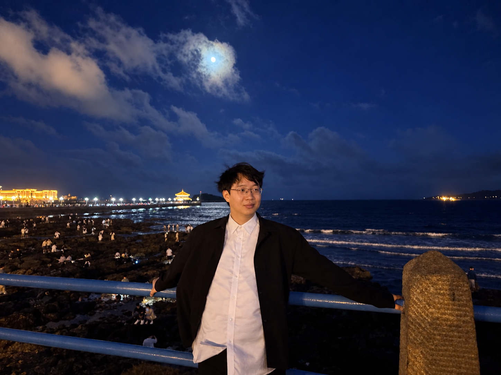

Wei Jiang (姜伟)
Professor
School of Computer Science and Engineering
Nanjing University of Science and Technology, Nanjing, China
I am currently accepting graduate students and welcome undergraduate interns. Please contact me by email.
Research Interests
Machine Learning, Stochastic Optimization, LLM Optimization.
Working Experiences
-
2025.10 - now, Nanjing University of Science and Technology.
- Professor, School of Computer Science and Engineering.
Education Experiences
-
2020.09 - 2025.06, Ph.D., Computer Science and Technology, Nanjing University.
- Supervisor: Professor Lijun Zhang (LAMDA Group).
- 2023.10 - 2024.05, Visiting Student, National University of Singapore.
-
2016.09 - 2020.06, B.E., Computer Science and Technology (Honors Science Program), Xi'an Jiaotong University.
- 2019.01 - 2019.06, Exchange Student, University of California, Berkeley. [certificate][transcript]
- 2018.07 - 2018.08, Exchange Student, University of Manchester. [certificate]
Selected First-author Papers (Publications by Year)
- ICML 2026 Convergence Analysis of the Lion Optimizer in Centralized and Distributed Settings
In Proceedings of the 43rd International Conference on Machine Learning (ICML 2026), to appear, 2026. - TPAMI 2026 Optimizing Unnormalized Statistical Models through Compositional Optimization [PDF]
IEEE Transactions on Pattern Analysis and Machine Intelligence (TPAMI), 48(2): 1949 - 1960, 2026. - TPAMI 2025 Revisiting Stochastic Multi-Level Compositional Optimization [PDF]
IEEE Transactions on Pattern Analysis and Machine Intelligence (TPAMI), 47(7): 5613 - 5624, 2025. - Journal of Software 2025 Normalized Adaptive Variance Reduction Method [PDF]
Journal of Software, 36(11): 4893 - 4905, 2025. - NeurIPS 2024 Adaptive Variance Reduction for Stochastic Optimization under Weaker Assumptions [PDF]
In Advances in Neural Information Processing Systems 37 (NeurIPS 2024), pages 22047 - 22080, 2024. - NeurIPS 2024 Efficient Sign-Based Optimization: Accelerating Convergence via Variance Reduction [PDF]
In Advances in Neural Information Processing Systems 37 (NeurIPS 2024), pages 33891 - 33932, 2024. - ICML 2024 Projection-Free Variance Reduction Methods for Stochastic Constrained Multi-Level Compositional Optimization [PDF]
In Proceedings of the 41st International Conference on Machine Learning (ICML 2024), pages 21962 - 21987, 2024. - ICML 2023 Learning Unnormalized Statistical Models via Compositional Optimization [PDF]
In Proceedings of the 40th International Conference on Machine Learning (ICML 2023), pages 15105 - 15124, 2023. - NeurIPS 2022 Multi-block-Single-probe Variance Reduced Estimator for Coupled Compositional Optimization [PDF, Supplementary]
In Advances in Neural Information Processing Systems 35 (NeurIPS 2022), pages 32499 - 32511, 2022. - ICML 2022 Optimal Algorithms for Stochastic Multi-Level Compositional Optimization [PDF]
In Proceedings of the 39th International Conference on Machine Learning (ICML 2022), pages 10195 - 10216, 2022.
Honors and Awards
- Excellent Graduate of Nanjing University, 2025
- National Scholarship, 2024
- Excellent Student of Nanjing University, 2024
- NeurIPS Top Reviewer, 2024
- National Scholarship, 2023
- Excellent Student of Nanjing University, 2023
- LAMDA Elite Award, 2023
- Tencent Scholarship, 2022
- Excellent Student of Nanjing University, 2022
- Industrial Bank Scholarship, 2021
- Excellent Student of Nanjing University, 2021
- Grand Champion of DeeCamp Artificial Intelligence Camp, 2020 (￥100,000)
- Excellent Graduate of Xi'an jiaotong University, 2020
Foundation
- Research on Efficient Stochastic Optimization Methods for Large Models. National Natural Science Foundation of China, Young Scientists Fund (Category C), 2027-2029.
- Optimization Algorithms for Large Models under Resource Constraints. Natural Science Foundation of Jiangsu Province (Youth Program), 2027-2029.
- Distributed Optimization of Compositional Loss Functions. Postgraduate Research & Practice Innovation Program of Jiangsu Province, 2024-2025.
Academic Service
- Area Chair for Conference: NeurIPS, ICLR.
- Reviewer for Conference: ICML, NeurIPS, ICLR, AAAI, AISTATS, etc.
- Reviewer for Journal:
- IEEE Transactions on Pattern Analysis and Machine Intelligence
- IEEE Transactions on Information Forensics and Security
- IEEE Transactions on Evolutionary Computation
- Scientific Reports
- Machine Learning
- Applied Numerical Mathematics
- Information Sciences
- Neurocomputing
- Transactions on Machine Learning Research
- Journal of Machine Learning Research
- Journal of Scientific Computing